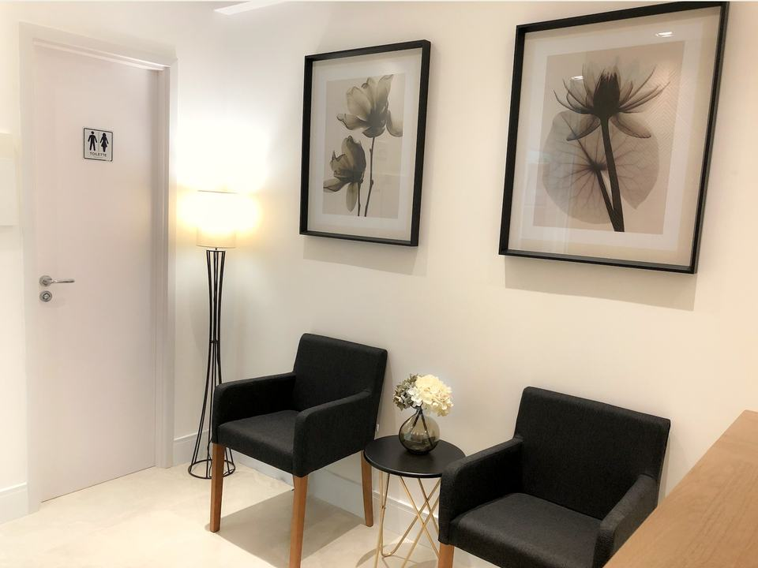
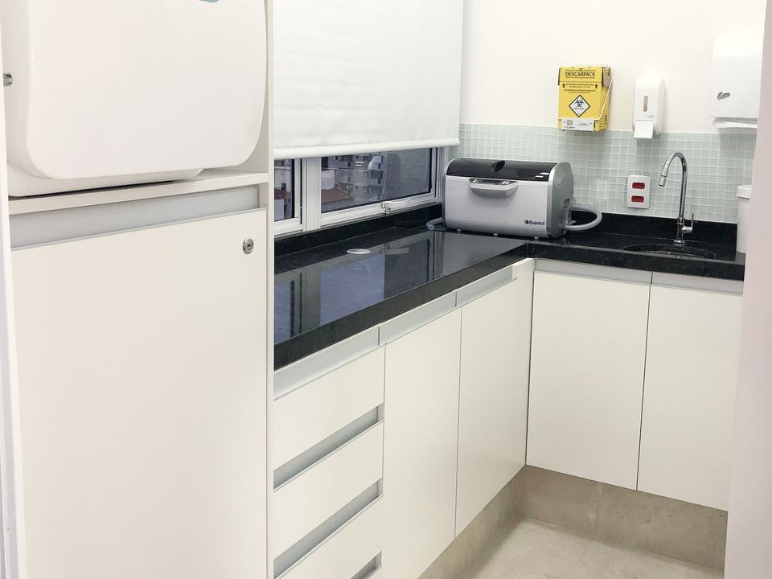

Sobre
Mariela Oliveira, cirurgiã-dentista
Responsável técnica de um consultório na Rua Cardeal Arcoverde, em Pinheiros, São Paulo.
Dra. Mariela OliveiraEspecialista em EndodontiaMariela Eugenia de Oliveira SilvaCRO-SP 116151

Como trabalha
O que guia a consulta
- Prevenção primeiroNo consultório, a prevenção é tratada como o fundamento de qualquer tratamento odontológico.
- Você vê as imagensNo check‑up digital, todas as imagens são mostradas ao paciente, com total transparência.
- Plano por escritoO check‑up digital gera um laudo com os problemas encontrados e o plano de tratamento.
- Olhar ampliadoNo tratamento de canal, o microscópio operatório amplia mais de 20 vezes o interior do dente.
Equipe
Quem atende aqui
A Dra. Mariela Oliveira é a responsável técnica. Também atendem no consultório:
Dr. Renan Rossi
Dr. Denis Cheberle
Primeira consulta
A consulta, passo a passo

- 01
Chamar no WhatsApp
Escreva o que você sente ou o que quer tratar, do seu jeito.
- 02
Avaliação
O exame olha cada dente e a gengiva. Se precisar, entra uma radiografia.
- 03
Plano explicado
Você conhece o plano de tratamento: o que seria feito, em que ordem e o investimento. Pode perguntar tudo antes de decidir.
- 04
Tratamento e retornos
Quando o procedimento pede, é feito com anestesia local. Os retornos são combinados com você.
O consultório
Onde você vai ser atendido
Recepção com sala de espera e salas de atendimento, no conjunto 808.
- Microscópio operatório no tratamento de canal
- Câmera intraoral de alta definição no check‑up
- Sala de esterilização própria
- Estacionamento próprio e metrô da linha verde por perto




Para quem
Para quem é o consultório
- Quem procura desde uma simples restauração até um implante
- Quem quer começar por um check‑up, mesmo sem sentir nada
- Quem já fez canal e o dente voltou a incomodar
Convênios: pergunte pelo WhatsApp.
Marcar consulta
Marcar uma consulta com a Dra. Mariela
Basta uma mensagem para começar.
Horários combinados pelo WhatsApp